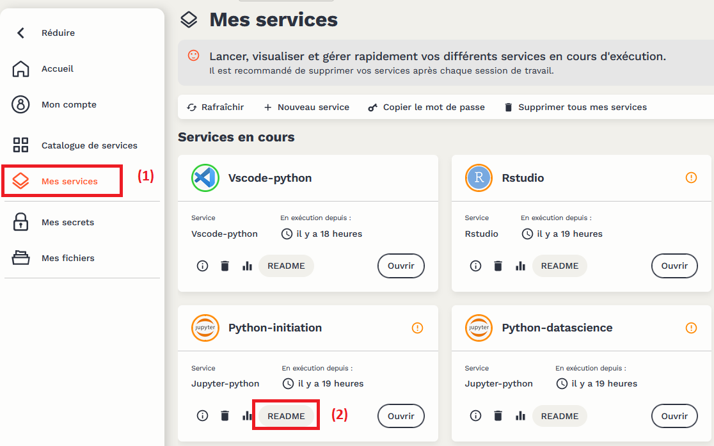
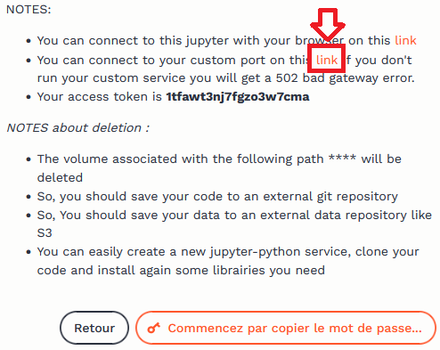

Code
# Solution pour voie 🟡
print("toto")Ce notebook vise à présenter pas à pas comment créer une application interactive avec Streamlit reproduisant celle proposée sur myyuka.lab.sspcloud.fr.
Cet exercice est proposé dans le cadre du Funathon (hackathon non compétitif) organisé en 2023 par l’Insee et le Ministère de l’Agriculture sur le thème “Du champ à l’assiette”. Les autres sujets sont disponibles sur le Github InseeFrLab.
L’objectif de ce projet est d’apprendre à utiliser Python pour créer des applications réactives avec Streamlit mais aussi de se familiariser à la manipulation de données avec Python et, au passage, à quelques bonnes pratiques utiles pour obtenir des projets plus lisibles et reproductibles.
Pour parvenir à cet objectif, il est possible d’emprunter plusieurs voies, plus ou moins guidées. Celles-ci sont là pour permettre que ce sujet soit réalisable. Elles sont balisées de la manière suivante:
| Balisage | Approche | Prérequis de niveau | Objectif pédagogique |
|---|---|---|---|
| 🟡 | Exécuter les cellules permet d’obtenir le résultat attendu | Capacité à installer des packages | Découvrir de nouveaux packages en suivant le fil conducteur du projet, découvrir les scripts Python, se familiariser avec Git |
| 🟢 | Des instructions détaillées sur la manière de procéder sont proposées | Connaître quelques manipulations avec Pandas |
Apprendre à utiliser certains packages avec un projet guidé, se familiariser avec les projets Python plus conséquents que les notebooks Jupyter |
| 🔵 | Instructions moins détaillées | Capacité à manipuler des données avec Pandas |
Apprendre à modulariser du code pour faciliter sa réutilisation dans une application, découvrir la récupation de données via des API |
| 🔴 | Peu d’instructions | Expérience en développement de code Python |
Découvrir la création d’application ou se familiariser avec l’écosystème DuckDB |
| ⚫ | Autonomie | Bonne maîtrise de Python et de la ligne de commande ̀Linux |
S’initier au déploiement d’une application ou à l’ingénieurie de données |
Le parcours vers la mise en oeuvre d’une application fonctionnelle se fait par étapes, en séquençant le projet pour permettre d’avoir un projet lisible, reproductible et modulaire.
Les étapes ne sont pas forcément de difficulté graduelle, il s’agit plutôt de séquencer de manière logique le projet pour vous faciliter la prise en main.
Il est donc tout à fait possible de passer, selon les parties, d’une voie 🟢 à une voie 🔵 ou bien de tester les codes proposés dans la voie 🟡 d’abord puis, une fois que la logique a été comprise, essayer de les faire soit-même via la voie 🟢 ou encore essayer via la voie 🔵, ne pas y parvenir du fait du caractère plus succinct des instructions et regarder les instructions de la voie 🟢 ou la solution de la voie 🟡.
Il est même tout à fait possible de sauter une étape et reprendre à partir de la suivante grâce aux checkpoints proposés.
Les consignes sont encapsulées dans des boites dédiées, afin d’être séparées des explications générales.
Par exemple, la boite verte prendra l’aspect suivant:
alors que sur le même exercice, si plusieurs voies peuvent emprunter le même chemin, on utilisera une délimitation grise :
La solution associée, visible pour les personnes sur la voie 🟡, sera:
# Solution pour voie 🟡
print("toto")Le projet est séquencé de la manière suivante:
| Etape | Objectif |
|---|---|
Récupération et nettoyage de la base OpenFoodFacts |
Lire des données avec Pandas depuis un site web (🟡,🟢,🔵,🔴,⚫), appliquer des nettoyages de champs textuels (🟡,🟢,🔵,🔴,⚫), catégoriser ces données avec un classifieur automatique (🟡,🟢,🔵,🔴,⚫) voire entrainer un classifieur ad hoc (🔴,⚫), écrire ces données sur un système de stockage distant (🟡,🟢,🔵,🔴,⚫) |
| Faire des statistiques agrégées par catégories | Utiliser Pandas (🟡,🟢,🔵) ou ̀DuckDB (🔴,⚫) pour faire des statistiques par groupe |
Trouver un produit dans OpenFoodFacts à partir d’un code barre |
Détection visuelle d’un code barre (🟡,🟢,🔵, 🔴,⚫), rechercher des données avec des critères d’appariement exact comme le code barre via Pandas (🟡,🟢,🔵) ou ̀DuckDB (🔴,⚫) ou via des distances textuelles (🔴,⚫) |
Encapsuler ces étapes dans une application Streamlit |
Tester une application Streamlit minimale (🟡,🟢,🔵, 🔴,⚫), personnaliser celle-ci (🔴,⚫ ou 🟡,🟢,🔵 désirant se focaliser sur Streamlit) |
| Mettre en production cette application | Déployer grâce à des serveurs standardisés une application Streamlit (🔴,⚫) ou proposer une version sans serveur (⚫ voulant se familiariser à Observable) |
Le développement à proprement parler de l’application est donc assez tardif car un certain nombre d’étapes préalables sont nécessaires pour ne pas avoir une application monolithique (ce qui est une bonne pratique). Si vous n’êtes intéressés que par développer une application Streamlit, vous pouvez directement passer aux étapes concernées (à partir de la partie 3️).
La première étape (1️⃣ Récupération et nettoyage de la base OpenFoodFacts) peut être assez chronophage. Cela est assez représentatif des projets de data science où la majorité du temps est consacrée à la structuration et la manipulation de données. La deuxième étape (2️ “Faire des statistiques agrégées par catégories”) est la moins centrale de ce sujet: si vous manquez de temps vous pouvez la passer et utiliser directement les morceaux de code mis à disposition.
Cette page peut être consultée par différents canaux:
Jupyter, les solutions de la voie 🟡 sont affichées par défaut. Elles peuvent être cachées en faisant View > Collapse All CodeNotre source de référence sera OpenFoodFacts, une base contributive sur les produits alimentaires.
OpenFoodFactsComme nous allons utiliser fréquemment certains paramètres, une bonne pratique consiste à les stocker dans un fichier dédié, au format YAML et d’importer celui-ci via Python. Ceci est expliqué dans ce cours de l’ENSAE
Nous proposons de créer le fichier suivant au nom config.yaml:
URL_OPENFOOD: "https://static.openfoodfacts.org/data/en.openfoodfacts.org.products.csv.gz"
ENDPOINT_S3: "https://minio.lab.sspcloud.fr"
BUCKET: "projet-funathon"
DESTINATION_DATA_S3: "/2023/sujet4/diffusion"
URL_FASTTEXT_MINIO: "https://minio.lab.sspcloud.fr/projet-funathon/2023/sujet4/diffusion/model_coicop10.bin"
URL_COICOP_LABEL: "https://www.insee.fr/fr/statistiques/fichier/2402696/coicop2016_liste_n5.xls"⚠️ Si vous désirez pouvoir reproduire tous les exemples de ce fichier, vous devez changer la variable BUCKET pour mettre votre nom d’utilisateur sur le SSPCloud.
Nous allons lire ce fichier avec le package adapté pour transformer ces instructions en variables Python (stockées dans un dictionnaire)!,
# Solution pour voie 🟡
import yaml
def import_yaml(filename: str) -> dict:
"""
Importer un fichier YAML
Args:
filename (str): Emplacement du fichier
Returns:
dict: Le fichier YAML sous forme de dictionnaire Python
"""
with open(filename, "r", encoding="utf-8") as stream:
config = yaml.safe_load(stream)
return config
import_yaml("config.yaml")Il est recommandé pour la suite de copier-coller la fonction créée (ne pas oublier les imports associés) dans un fichier à l’emplacement utils/import_yaml.py. Cette approche modulaire est une bonne pratique, recommandée dans ce cours de l’ENSAE.
Pour la voie 🟡, ce fichier a déjà été créé pour vous. Le tester de la manière suivante:
# Solution pour voie 🟡
from utils.import_yaml import import_yaml
config = import_yaml("config.yaml")OpenFoodFacts (🟡,🟢,🔵,🔴,⚫)Un export quotidien de la base de données OpenFoodFacts est fourni au format CSV. L’URL est le suivant:
config["URL_OPENFOOD"]Il est possible d’importer de plusieurs manières ce type de fichier avec Python. Ce qu’on propose ici, c’est de le faire en deux temps, afin d’avoir un contrôle des options mises en oeuvre lors de l’import (notamment le format de certaines variables) :
requests pour télécharger le fichier et l’écrire, de manière intermédiaire, sur le disque local ;pandas avec quelques options pour importer le fichier puis le manipuler.# Solution pour voie 🟡
from utils.preprocess_openfood import download_openfood, import_openfood
download_openfood(destination = "openfood.csv.gz")
openfood = import_openfood("openfood.csv.gz")
openfood.loc[:, ['code', 'product_name', 'energy-kcal_100g', 'nutriscore_grade']].sample(5, random_state = 12345)L’objectif de l’application est de proposer pour un produit donné quelques statistiques descriptives. On propose de se focaliser sur trois scores :
Ces scores ne sont pas systématiquement disponibles sur OpenFoodFacts mais une part croissante des données présente ces informations (directement renseignées ou imputées).
indices_synthetiques = ['nutriscore_grade', 'nova_group', 'ecoscore_grade']Le bloc de code ci-dessous propose d’harmoniser le format de ces scores pour faciliter la représentation graphique ultérieure.
Comme il ne s’agit pas du coeur du sujet, il est donné directement à tous les parcours. Le code source de cette fonction est disponible dans le module utils.pipeline:
import pandas as pd
from utils.pipeline import clean_note
indices_synthetiques = ['nutriscore_grade', 'nova_group', 'ecoscore_grade']
openfood.loc[:, indices_synthetiques] = pd.concat(
[clean_note(openfood, s, "wide") for s in indices_synthetiques],
axis = 1
)Pour proposer sur notre application quelques statistiques pertinentes sur le produit, nous allons associer chaque ligne d’OpenFoodFacts à un type de produit dans la COICOP pour pouvoir comparer un produit à des produits similaires.
Nous allons ainsi utiliser le nom du produit pour inférer le type de bien dont il s’agit.
Pour cela, dans les parcours 🟡,🟢 et 🔵, nous allons d’utiliser un classifieur expérimental proposé sur Github InseeFrLab/predicat qui a été entrainé sur cette tâche sur un grand volume de données (non spécifiquement alimentaires).
Pour les parcours 🔴 et ⚫, nous proposons également d’utiliser ce classifieur. Néanmoins, une voie bis est possible pour entraîner soi-même un classifieur en utilisant la catégorisation des données disponible directement dans OpenFoodFacts. Il est proposé d’utiliser Fasttext (une librairie spécialisée open-source, développée par Meta il y a quelques années) dans le cadre de la voie 🔴. Les personnes suivant la voie ⚫ sont libres d’utiliser n’importe quel framework de classification, par exemple un modèle disponible sur HuggingFace.
Dans un premier temps, on récupère les fonctions permettant d’appliquer sur nos données le même preprocessing que celui qui a été mis en oeuvre lors de l’entraînement du modèle:
# Solution pour voie 🟡 et 🟢
from utils.download_pb import download_pb
download_pb("https://raw.githubusercontent.com/InseeFrLab/predicat/master/app/utils_ddc.py", "utils/utils_ddc.py")Pour observer les nettoyages de champs textuels mis en oeuvre, les lignes suivantes peuvent être exécutées:
from utils.utils_ddc import replace_values_ean
replace_values_eanPour effectuer des remplacements dans des champs textuels, le plus simple est d’utiliser les expressions régulières (regex). Vous pouvez trouver une ressource complète sur le sujet dans ce cours de Python de l’ENSAE.
Deux options s’offrent à nous:
re et boucler sur les lignesPandasNous privilégierons la deuxième approche, plus naturelle quand on utilise des DataFrames et plus efficace puisqu’elle est nativement intégrée à Pandas.
La syntaxe prend la forme suivante :
data.replace({variable: dict_rules_replacement}, regex=True)C’est celle qui est implémentée dans la fonction ad hoc du script utils/preprocess_openfood.py. Cette dernière s’utilise de la manière suivante:
from utils.utils_ddc import replace_values_ean
from utils.preprocess_openfood import clean_column_dataset
openfood = clean_column_dataset(
openfood, replace_values_ean,
"product_name", "preprocessed_labels"
)Voici quelques cas où notre nettoyage de données a modifié le nom du produit :
(openfood
.dropna(subset = ["product_name", "preprocessed_labels"])
.loc[
openfood["product_name"].str.upper() != openfood["preprocessed_labels"],
["product_name", "preprocessed_labels"]
]
)On peut remarquer que pour aller plus loin et améliorer la normalisation des champs, il serait pertinent d’appliquer un certain nombre de nettoyages supplémentaires, comme le retrait des mots de liaison (stop words). Des exemples de ce type de nettoyages sont présents dans le cours de Python de l’ENSAE.
Cela est laissé comme exercice aux voies 🔴 et ⚫.
On peut maintenant se tourner vers la classification à proprement parler. Pour celle-ci, on propose d’utiliser un modèle qui a été entrainé avec la librairie Fasttext. Voici comment récupérer le modèle et le tester sur un exemple très basique:
from utils.download_pb import download_pb
import os
import fasttext
if os.path.exists("fasttext_coicop.bin") is False:
download_pb(
url = config["URL_FASTTEXT_MINIO"],
fname = "fasttext_coicop.bin"
)
model = fasttext.load_model("fasttext_coicop.bin")
model.predict("RATATOUILLE")Le résultat est peu intelligible. En effet, cela demande une bonne connaissance de la COICOP pour savoir de manière intuitive que cela correspond à la catégorie “Autres plats cuisinés à base de légumes”.
Avant de généraliser le classifieur à l’ensemble de nos données, on se propose donc de récupérer les noms des COICOP depuis le site insee.fr. Comme cela ne présente pas de défi majeur, le code est directement proposé, quelle que soit la voie empruntée:
def import_coicop_labels(url: str) -> pd.DataFrame:
coicop = pd.read_excel(url, skiprows=1)
coicop['Code'] = coicop['Code'].str.replace("'", "")
coicop = coicop.rename({"Libellé": "category"}, axis = "columns")
return coicop
coicop = import_coicop_labels(
"https://www.insee.fr/fr/statistiques/fichier/2402696/coicop2016_liste_n5.xls"
)
# Verification de la COICOP rencontrée plus haut
coicop.loc[coicop["Code"].str.contains("01.1.7.3.2")]Maintenant nous avons tous les ingrédients pour généraliser notre approche. L’application en série de prédictions via Fasttext étant un peu fastidieuse et peu élégante (elle nécessite d’être à l’aise avec les listes Python) et n’étant pas le centre de notre sujet, la fonction suivante est fournie pour effectuer cette opération :
def model_predict_coicop(data, model, product_column: str = "preprocessed_labels", output_column: str = "coicop"):
predictions = pd.DataFrame(
{
output_column: \
[k[0] for k in model.predict(
[str(libel) for libel in data[product_column]], k = 1
)[0]]
})
data[output_column] = predictions[output_column].str.replace(r'__label__', '')
return data
openfood = model_predict_coicop(openfood, model)predicat (🟡,🟢,🔵,🔴,⚫)L’utilisation d’API pour accéder à des données devient de plus en plus fréquente. Si vous êtes peu familiers avec les API, vous pouvez consulter ce chapitre du cours de Python de l’ENSAE ou de la documentation utilitR (langage R)
Les API peuvent servir à faire beaucoup plus que récupérer des données. Elles sont notamment de plus en plus utilisées pour récupérer des prédictions d’un modèle. La plateforme HuggingFace est très appréciée pour cela: elle a grandement facilité la réutilisation de modèles mis en disposition en open source. Cette approche a principalement deux avantages:
DataFrame.Ici, nous proposons de tester une API mise à disposition de manière expérimentale pour faciliter la réutilisation de notre modèle de classification dans la nomenclature COICOP.
Cette API s’appelle predicat et son code source est disponible sur Github.
Pour les parcours 🟡,🟢,🔵, nous suggérons de se cantonner à tester quelques exemples. Pour les parcours 🔴 et ⚫ qui voudraient se tester sur les API, nous proposons de généraliser ces appels à predicat pour classifier toutes nos données.
Voici, pour les parcours 🟡,🟢,🔵, un exemple d’utilisation:
import requests
def predict_from_api(product_name):
url_api = f"https://api.lab.sspcloud.fr/predicat/label?k=1&q=%27{product_name}%27"
output_api_predicat = requests.get(url_api).json()
coicop_found = output_api_predicat['coicop'][f"'{product_name}'"][0]['label']
return coicop_found
predict_from_api("Ratatouille")Pour le parcours 🔵, voici un exercice pour tester sur un échantillon des données de l’OpenFoodFacts
Les grimpeurs des voies 🔴 et ⚫ sont encouragés à essayer d’entraîner eux-mêmes un modèle de classification.
Le fait d’avoir effectué en amont ce type d’opération permettra d’économiser du temps par la suite puisqu’on s’évite des calculs à la volée coûteux en performance (rien de pire qu’une page web qui rame non ?).
Pour facilement retrouver ces données, on propose de les écrire dans un espace de stockage accessible facilement. Pour cela, nous proposons d’utiliser celui du SSP Cloud pour les personnes ayant un compte dessus. Pour les personnes n’ayant pas de compte sur le SSP Cloud, vous pouvez passer cette étape et réutiliser le jeu de données que nous proposons pour la suite de ce parcours.
Nous proposons ici d’utiliser le package s3fs qui est assez pratique pour traiter un espace distant comme on ferait d’un espace de stockage local. Pour en apprendre plus sur le système de stockage S3 (la technologie utilisée par le SSP Cloud) ou sur le format Parquet, vous pouvez consulter ce chapitre du cours de Python de l’ENSAE
La première étape consiste à initialiser la connexion (créer un file system distant, via s3fs.S3FileSystem, qui pointe vers l’espace de stockage du SSP Cloud). La deuxième ressemble beaucoup à l’écriture d’un fichier en local, il y a seulement une couche d’abstraction supplémentaire avec fs.open:
from utils.import_yaml import import_yaml
import s3fs
config = import_yaml("config.yaml")
DESTINATION_OPENFOOD = f"{config['BUCKET']}{config['DESTINATION_DATA_S3']}/openfood.parquet"
# Initialisation de la connexion
fs = s3fs.S3FileSystem(
client_kwargs={"endpoint_url": config["ENDPOINT_S3"]}
)
# Ecriture au format parquet sur l'espace de stockage distant
with fs.open(DESTINATION_OPENFOOD, "wb") as file_location:
openfood.to_parquet(file_location)⚠️ Il faut avoir modifié la valeur de BUCKET dans le fichier config.yaml pour que cette commande fonctionne.
Enfin, pour rendre ce fichier accessible à votre future application, il est nécessaire d’éditer la cellule ci-dessous pour remplacer <USERNAME_SSPCLOUD> par votre nom d’utilisateur sur le SSPCloud puis d’exécuter la cellule suivante:
!mc anonymous set download s3/<USERNAME_SSPCLOUD>/2023/sujet4/diffusionqui rend ce fichier public.
Le fichier sera ainsi disponible en téléchargement directement depuis un URL de la forme:
https://minio.lab.sspcloud.fr/
/2023/sujet4/diffusion/openfood.parquet
Cette partie permet de calculer en amont de l’application des statistiques descriptives qui pourront être utilisées par celle-ci.
Il est préférable de minimiser la quantité de calculs faits à la volée dans le cadre d’une application. Sinon, le risque est une latence embêtante pour l’utilisateur voire un crash du serveur à cause de besoins de ressources trop importants.
Cette partie propose ainsi de créer en avance une base de données synthétisant le nombre de produits dans une catégorie donnée (par exemple les fromages à pâte crue) qui partagent la même note. Cela nous permettra d’afficher des statistiques personnalisées sur les produits similaires à celui qu’on scanne.
Sur le plan technique, cette partie propose deux cadres de manipulation de données différents, selon le balisage de la voie:
PandasParquet grâce à DuckDBLa deuxième approche permet de mettre en oeuvre des calculs plus efficaces (DuckDB) est plus rapide mais nécessite un peu plus d’expertise sur la manipulation de données, notamment des connaissances en SQL.
Cette partie va fonctionner en trois temps:
OpenFoodFacts précédemment produitesLes étapes 1 et 2 sont séparées conceptuellement pour les parcours 🟡,🟢,🔵. Pour les parcours 🔴 et ⚫, l’utilisation de requêtes SQL fait que ces deux étapes conceptuelles sont intriquées. Les parcours 🟡,🟢,🔵 peuvent observer les morceaux de code proposés dans le cadre 🔴 et ⚫, c’est assez instructif. L’étape 3 (production de graphiques) sera la même pour tous les parcours.
Nous proposons d’importer à nouveau nos configurations:
from utils.import_yaml import import_yaml
config = import_yaml("config.yaml")Les colonnes suivantes nous seront utiles dans cette partie:
indices_synthetiques = [
"nutriscore_grade", "ecoscore_grade", "nova_group"
]
principales_infos = ['product_name', 'code', 'preprocessed_labels', 'coicop']Voici, à nouveau, la configuration pour permettre à Python de communiquer avec l’espace de stockage distant:
import s3fs
config = import_yaml("config.yaml")
INPUT_OPENFOOD = f"{config['BUCKET']}{config['DESTINATION_DATA_S3']}/openfood.parquet"
# Initialisation de la connexion
fs = s3fs.S3FileSystem(
client_kwargs={"endpoint_url": config["ENDPOINT_S3"]}
)Pandas (🟡,🟢,🔵)Il est recommandé pour les parcours 🟡, 🟢, 🔵 de travailler avec Pandas pour construire des statistiques descriptives. Cela se fera en deux étapes:
OpenFoodFacts (🟡, 🟢 et 🔵)Il est possible de lire un CSV de plusieurs manières avec Python. L’une d’elle se fait à travers le context manager. Le module s3fs permet d’utiliser ce context manager pour lire un fichier distant, de manière très similaire à la lecture d’un fichier local.
# Solution pour voie 🟡, 🟢 et 🔵
import pandas as pd
# methode 1: pandas
with fs.open(INPUT_OPENFOOD, "rb") as remote_file:
openfood = pd.read_parquet(
remote_file,
columns = principales_infos + \
indices_synthetiques
)Les données ont ainsi l’aspect suivant:
openfood.head(2)On désire calculer pour chaque classe de produits - par exemple les boissons rafraichissantes - le nombre de produits qui partagent une même note pour chaque indicateur de qualité nutritionnelle ou environnementale.
Nous allons utiliser le DataFrame suivant pour les calculs de notes:
openfood_notes = openfood.loc[:,["coicop"] + indices_synthetiques]# Solution pour voie 🟡, 🟢 et 🔵
def compute_stats_grades(data, indices_synthetiques):
stats_notes = (
data
.groupby("coicop")
.agg({i:'value_counts' for i in indices_synthetiques})
.reset_index(names=['coicop', 'note'])
)
stats_notes = pd.melt(stats_notes, id_vars = ['coicop','note'])
stats_notes = stats_notes.dropna().drop_duplicates(subset = ['variable','note','coicop'])
stats_notes['value'] = stats_notes['value'].astype(int)
return stats_notes
stats_notes = compute_stats_grades(openfood_notes, indices_synthetiques)DuckDB (🔴 et ⚫)Cette partie propose pour les parcours 🔴 et ⚫ de reproduire l’analyse faite par les parcours 🟡,🟢 et 🔵 via Pandas.
DuckDB va être utilisé pour lire et agréger les données. Pour lire directement depuis un système de stockage distant, sans pré-télécharger les données, vous pouvez utiliser la configuration suivante de DuckDB:
import duckdb
con = duckdb.connect(database=':memory:')
con.execute("""
INSTALL httpfs;
LOAD httpfs;
SET s3_endpoint='minio.lab.sspcloud.fr'
""")Et voici un exemple minimal de lecture de données à partir du chemin INPUT_OPENFOOD défini précédemment.
duckdb_data = con.sql(
f"SELECT product_name, preprocessed_labels, coicop, energy_100g FROM read_parquet('s3://{INPUT_OPENFOOD}') LIMIT 10"
)
duckdb_data.df() #conversion en pandas dataframeNous proposons de créer une unique requête SQL qui, dans une clause SELECT, pour chaque classe de produit (notre variable de COICOP), compte le nombre de produits qui partagent une même note.
# Solution à la voie 🔴 et ⚫ pour les curieux de la voie 🟡, 🟢 et 🔵
def count_one_variable_sql(con, variable, path_within_s3 = "temp.parquet"):
query = f"SELECT coicop, {variable} AS note, COUNT({variable}) AS value FROM read_parquet('s3://{path_within_s3}') GROUP BY coicop, {variable}"
stats_one_variable = con.sql(query).df().dropna()
stats_one_variable['variable'] = variable
return stats_one_variable
grades = ["nutriscore_grade", "ecoscore_grade", "nova_group"]
stats_notes_sql = [count_one_variable_sql(con, note, INPUT_OPENFOOD) for note in grades]
stats_notes_sql = pd.concat(stats_notes_sql)Ceci nous donne donc le DataFrame suivant:
stats_notes_sql.head(2)Ces statistiques descriptives sont à écrire dans l’espace de stockage distant pour ne plus avoir à les calculer.
def write_stats_to_s3(data, destination):
# Ecriture au format parquet sur l'espace de stockage distant
with fs.open(destination, "wb") as file_location:
data.to_parquet(file_location)
write_stats_to_s3(stats_notes, f"{config['BUCKET']}{config['DESTINATION_DATA_S3']}/stats_notes_pandas.parquet")
write_stats_to_s3(stats_notes_sql, f"{config['BUCKET']}{config['DESTINATION_DATA_S3']}/stats_notes_sql.parquet")⚠️ Il faut avoir modifié la valeur de BUCKET dans le fichier config.yaml pour que cette commande fonctionne.
On va utiliser Plotly pour créer des graphiques et, ultérieurement, les afficher sur notre page web. Cela permettra d’avoir un peu de réactivité, c’est l’intérêt de faire un format web plutôt qu’une publication figée comme un PDF.
Voici un exemple de fonction qui répond aux cahiers des charges ci-dessus:
# Solution pour voie 🟡
import plotly.express as px
import numpy as np
def figure_infos_notes(
data, variable_note = 'nutriscore_grade',
coicop = "01.1.7.3.2", note_produit = "B",
title = "Nutriscore"
):
example_coicop = data.loc[data['variable'] == variable_note]
example_coicop = example_coicop.loc[example_coicop['coicop']==coicop]
example_coicop['color'] = np.where(example_coicop['note'] == note_produit, "Note du produit", "Autres produits")
fig = px.bar(
example_coicop,
x='note', y='value', color = "color", template = "simple_white",
title=title,
color_discrete_map={"Note produit": "red", "Autres produits": "royalblue"},
labels={
"note": "Note",
"value": ""
}
)
fig.update_xaxes(
categoryorder='array',
categoryarray= ['A', 'B', 'C', 'D', 'E'])
fig.update_layout(showlegend=False)
fig.update_layout(hovermode="x")
fig.update_traces(
hovertemplate="<br>".join([
"Note %{x}",
f"{variable_note}: " +" %{y} produits"
])
)
return figVoici un exemple d’utilisation
from utils.construct_figures import figure_infos_notes
fig = figure_infos_notes(stats_notes)
fig.update_layout(width=800, height=400)
figTout ce travail préliminaire nous permettra d’afficher sur notre application des statistiques propres à chaque catégorie.
On propose d’utiliser le jeu de données préparé précedemment
indices_synthetiques = [
"nutriscore_grade", "ecoscore_grade", "nova_group"
]
principales_infos = ['product_name', 'code', 'preprocessed_labels', 'coicop']
liste_colonnes = principales_infos + indices_synthetiques
liste_colonnes_sql = [f"\"{s}\"" for s in liste_colonnes]
liste_colonnes_sql = ', '.join(liste_colonnes_sql)On va aussi utiliser la nomenclature COICOP qui peut être importée via le code ci-dessous:
from utils.download_pb import import_coicop_labels
coicop = import_coicop_labels(
"https://www.insee.fr/fr/statistiques/fichier/2402696/coicop2016_liste_n5.xls"
)La première brique de notre application consiste à repérer un produit par le scan du code-barre. Nous allons partir pour le moment d’un produit d’exemple, ci-dessous:

url_image = "https://images.openfoodfacts.org/images/products/500/011/260/2791/front_fr.4.400.jpg"Dans le cadre de notre application, on permettra aux utilisateurs d’uploader la photo d’un produit, ce sera plus fun. En attendant notre application, partir d’un produit standardisé permet déjà de mettre en oeuvre la logique à ré-appliquer plus tard.
Pour se simplifier la vie, le plus simple pour repérer un code-barre est d’utiliser le package pyzbar. Pour transformer une image en matrice Numpy (l’objet attendu par pyzbar), on peut utiliser le module skimage de la manière suivante:
from skimage import io
io.imread(url_image)Grâce à sklearn.image, on peut utiliser l’URL d’une page web ou le chemin d’un fichier de manière indifférente pour la valeur de url_image.
# Solution pour voie 🟡
from pyzbar import pyzbar
def extract_ean(url, verbose=True):
img = io.imread(url)
decoded_objects = pyzbar.decode(img)
if verbose is True:
for obj in decoded_objects:
# draw the barcode
print("detected barcode:", obj)
# print barcode type & data
print("Type:", obj.type)
print("Data:", obj.data)
return decoded_objects
obj = extract_ean(url_image, verbose = False)
obj[0].data.decode()On obtient bien un code identifiant notre produit. Il s’agit de l’EAN qui est un identifiant unique, partagé quelque soit le point de vente d’un produit. Il s’agit d’un identifiant présent sur tout code-barre, utilisé dans les systèmes d’information des grandes enseignes mais aussi dans les bases produits qui peuvent être utilisées de manière annexe (par exemple l’OpenFoodFacts).
OpenFoodFacts (🟡,🟢,🔵,🔴,⚫)Maintenant qu’on dispose d’un code-barre (le numéro EAN), on va trouver le produit dans OpenFoodFacts à partir de ce code-barre.
Cependant, comme il peut arriver qu’un produit dispose d’informations incomplètes, il peut être utile de faire non seulement de l’appariement exact (trouver le produit avec le même code EAN) mais aussi de l’appariement flou (trouver un produit avec un nom proche de celui qu’on veut).
Ceci est un exercice pour les parcours 🔴 et ⚫, les autres voies pouvant prendre cette fonction comme donnée.
Pour aller plus loin sur cette question des appariements flous, il pourrait être utile d’aller vers ElasticSearch. C’est néanmoins un sujet en soi, nous proposons donc aux curieux de consulter cette ressource.
Voici l’EAN d’exemple :
ean = "5000112602999"Pour avoir un outil performant, on propose d’utiliser DuckDB pour lire et filtrer les données. Cela sera plus performant que lire, à chaque fois que l’utilisateur de notre application upload une image, un gros fichier (2 millions de ligne) pour n’en garder qu’une.
Voici la configuration à mettre en oeuvre:
import duckdb
con = duckdb.connect(database=':memory:')
con.execute("""
INSTALL httpfs;
LOAD httpfs;
SET s3_endpoint='minio.lab.sspcloud.fr'
""")
url_data = "https://projet-funathon.minio.lab.sspcloud.fr/2023/sujet4/diffusion/openfood.parquet"Pour commencer, effectuons une requête SQL pour récupérer le produit correspondant au code-barre qu’on a scanné:
Voici la solution:
# Solution pour voie 🟡
def get_product_ean(con, ean, url_data, liste_colonnes_sql):
openfood_produit = con.sql(
f"SELECT {liste_colonnes_sql} FROM read_parquet('{url_data}') WHERE CAST(ltrim(code, '0') AS STRING) = CAST(ltrim({ean}) AS STRING)"
).df()
return openfood_produitOn va néanmoins intégrer ceci dans un pipeline plus général:
Voici la fonction qui permet d’implémenter la deuxième partie:
# Solution pour voie 🟡
import numpy as np
import pandas as pd
from utils.pipeline import clean_note
def fuzzy_matching_product(openfood_produit, product_name, con, url_data, liste_colonnes_sql, indices_synthetiques):
out_textual = con.sql(f"SELECT {liste_colonnes_sql} from read_parquet('{url_data}') WHERE jaro_winkler_similarity('{product_name}',product_name) > 0.9 AND \"energy-kcal_100g\" IS NOT NULL")
out_textual = out_textual.df()
out_textual_imputed = pd.concat(
[
openfood_produit.loc[:, ["code", "product_name", "coicop"]].reset_index(drop = True),
pd.DataFrame(out_textual.loc[:, indices_synthetiques].replace("NONE","").replace('',np.nan).mode(dropna=True))
], ignore_index=True, axis=1
)
out_textual_imputed.columns = ["code", "product_name", "coicop"] + indices_synthetiques
return out_textual_imputedVoici finalement le pipeline mis en oeuvre par une fonction :
# Solution pour voie 🟡
def find_product_openfood(con, liste_colonnes_sql, url_data, ean):
openfood_produit = con.sql(
f"SELECT {liste_colonnes_sql} FROM read_parquet('{url_data}') WHERE CAST(ltrim(code, '0') AS STRING) = CAST(ltrim({ean}) AS STRING)"
).df()
product_name = openfood_produit["product_name"].iloc[0]
if openfood_produit['nutriscore_grade'].isin(['NONE','']).iloc[0]:
openfood_produit = fuzzy_matching_product(
openfood_produit, product_name, con, url_data,
liste_colonnes_sql, indices_synthetiques)
openfood_produit = openfood_produit.merge(coicop, left_on = "coicop", right_on = "Code")
return openfood_produitQui peut être finalisé de la manière suivante:
openfood_produit = find_product_openfood(
con, liste_colonnes_sql,
url_data, ean
)
openfood_produit.head(2)La dernière partie du prototypage consiste à enrober nos fonctions de production de graphiques dans une fonction plus générique.
Pour rappel, l’import des données se fait de la manière suivante:
stats_notes = pd.read_parquet(
"https://minio.lab.sspcloud.fr/projet-funathon/2023/sujet4/diffusion/stats_notes_pandas.parquet"
)Dans notre application, nous allons utiliser cette fonction:
from utils.construct_figures import figure_infos_notes
variable = 'nutriscore_grade'
def plot_product_info(
data, variable,
stats_notes):
fig = figure_infos_notes(
stats_notes,
variable_note = variable,
coicop = data['coicop'].iloc[0],
note_produit = data[variable].iloc[0],
title = variable.split("_")[0].capitalize()
)
return figfig = plot_product_info(openfood_produit, variable, stats_notes)
fig.update_layout(width=800, height=400)
figfig = plot_product_info(openfood_produit, "ecoscore_grade", stats_notes)
fig.update_layout(width=800, height=400)
figCette partie vise à assembler les briques précédentes afin de les rendre facilement accessibles à un utilisateur final. Pour cela, nous allons construire une application interactive à l’aide du framework Streamlit en Python.
L’objectif est de créer une application sur le modèle de myyuka.lab.sspcloud.fr/. Voici une petite vidéo de démonstration de l’application:
from IPython.display import HTML
HTML("""
<video width="520" height="240" alt="test" controls>
<source src="https://minio.lab.sspcloud.fr/projet-funathon/2023/sujet4/diffusion/video_out.webm" type="video/mp4">
</video>
""")Selon le parcours suivi, la construction de cette application sera plus ou moins guidée.
Il est rare d’avoir une application fonctionnelle du premier coup, cela peut demander beaucoup d’essai-erreur pour parvenir à ses fins. Il est donc utile de régulièrement lancer l’application pour la tester. Cela se fait en lançant un serveur local, c’est-à-dire en créant une tâche qui fonctionne en arrière-plan et qui va créer une interaction entre un navigateur et du code Python.
Pour lancer ce serveur web local plusieurs méthodes sont possibles sur le SSP Cloud, en partant du principe que votre application est stockée dans un fichier app.py
+ dans le menu à gauche de Jupyter et exécuter, dans le bon dossier de travail, streamlit run app.py --server.port 5000 --server.address 0.0.0.0Jupyter, il suffit d’exécuter la cellule suivante:!streamlit run app.py --server.port 5000 --server.address 0.0.0.0Remarque: si vous n’êtes pas sur le SSP Cloud, vous pouvez retirer l’option --server.address 0.0.0.0.
Il reste à accéder au navigateur sur lequel l’application a été déployée. Sur un poste local, vous ouvririez l’URL localhost:5000 sur votre navigateur. Pour accéder à votre application depuis le SSP Cloud, il va falloir y accéder différemment.
My Services.README pour accéder à des informations sur le service Jupyter ouvert.
Il faut ensuite cliquer sur le lien ci-dessous:

Cela va ouvrir un nouvel onglet sur votre navigateur où, cette fois, vous aurez l’application. Chaque action que vous effectuerez sur celle-ci déclenchera une opération dans la
ligne de commande que vous avez lancée.
Pour le parcours 🟡, la voie s’arrête à ce niveau. Vous pouvez néanmoins basculer du côté de la voie 🟢 pour apprendre de manière guidée à créer votre application Streamlit.
Pour les parcours 🟢,🔵,🔴 et ⚫, vous allez pouvoir créer vous-même l’application, de manière plus ou moins guidée.
Voici la gradation des niveaux pour créer l’application:
app.py qui génère l’applicationapp.py, mettre en oeuvre l’application avec des consignes guidéesapp.py, mettre en oeuvre l’application à partir d’un cachier des charges détailléapp.py, mettre en oeuvre l’application uniquement à partir de l’exemple sur myyuka.lab.sspcloud.fr/ et de la vidéo précédemment présentée. Idéalement, faire en sorte que le contenu du site soit responsive c’est-à-dire qu’il soit bien adapté à la taille de l’écran.Voici une proposition d’application, afin de reproduire en local le contenu de myyuka.lab.sspcloud.fr/
# Solution pour la voie 🟢
with open('app.py', 'r') as file:
app_content = file.read()
print(
app_content
)import streamlit as st
from streamlit_javascript import st_javascript
import cv2
import pandas as pd
import duckdb
from utils.detect_barcode import extract_ean, visualise_barcode
from utils.pipeline import find_product_openfood
from utils.construct_figures import plot_product_info
from utils.utils_app import local_css, label_grade_formatter
from utils.download_pb import import_coicop_labels
# Une personnalisation sympa pour l'onglet
st.set_page_config(page_title="PYuka", page_icon="🍎")
# --------------------
# METADATA
indices_synthetiques = [
"nutriscore_grade", "ecoscore_grade", "nova_group"
]
principales_infos = [
'product_name', 'code', 'preprocessed_labels', 'coicop', \
'url', 'image_url'
]
liste_colonnes = principales_infos + indices_synthetiques
liste_colonnes_sql = [f"\"{s}\"" for s in liste_colonnes]
liste_colonnes_sql = ', '.join(liste_colonnes_sql)
con = duckdb.connect(database=':memory:')
con.execute("""
INSTALL httpfs;
LOAD httpfs;
SET s3_endpoint='minio.lab.sspcloud.fr'
""")
# LOAD DATASET
url_data = "https://projet-funathon.minio.lab.sspcloud.fr/2023/sujet4/diffusion/openfood.parquet"
stats_notes = pd.read_parquet("https://minio.lab.sspcloud.fr/projet-funathon/2023/sujet4/diffusion/stats_notes_pandas.parquet")
coicop = import_coicop_labels(
"https://www.insee.fr/fr/statistiques/fichier/2402696/coicop2016_liste_n5.xls"
)
# --------------------
st.title('Mon Yuka 🥕 avec Python 🐍')
# Feuille de style & taille de l'écran pour adapter l'interface
local_css("style.css")
width = st_javascript(
"window.innerWidth"
)
# --------------------------------
# PARTIE 1: LES INPUTS
if width > 500:
# pour les grands écrans on met une partie à gauche
# qui centralise plusieurs type d'input
with st.sidebar:
# choix de la méthode d'upload
input_method = st.radio(
"Méthode d'upload de la photo",
('Photo enregistrée', 'Capture de la webcam'))
if input_method == 'Photo enregistrée':
# file uploader
input_url = st.file_uploader("Uploaded une photo:", accept_multiple_files=False)
else:
# camera uploader
picture = st.camera_input("Take a picture")
input_url = picture
if input_url is not None:
# visualise l'image s'il y a un input
img = visualise_barcode(input_url)
cv2.imwrite('barcode_opencv.jpg', img)
st.image('barcode_opencv.jpg')
# choix des statistiques à afficher
options = st.multiselect(
'Quelles statistiques afficher ?',
["nutriscore_grade", "nova_group", "ecoscore_grade"],
["nutriscore_grade", "nova_group", "ecoscore_grade"],
format_func=label_grade_formatter)
else:
# pour les petits écrans (type smartphone)
# le file uploader est au début
input_method = st.radio(
"Méthode d'upload de la photo",
('Photo enregistrée', 'Capture de la webcam'))
if input_method == 'Photo enregistrée':
# file uploader
input_url = st.file_uploader("Uploaded une photo:", accept_multiple_files=False)
else:
# camera uploader
picture = st.camera_input("Take a picture")
input_url = picture
# choix des statistiques à afficher
options = st.multiselect(
'Quelles statistiques afficher ?',
["nutriscore_grade", "nova_group", "ecoscore_grade"],
["nutriscore_grade", "nova_group", "ecoscore_grade"],
format_func=label_grade_formatter)
# ----------------------------------------------------------
# PARTIE 2: EXPLOITATION DES INPUTS DANS NOTRE APP
# CHARGEMENT DE LA LIGNE DANS OPENFOODFACTS
@st.cache_data
def load_data(ean):
openfood_data = find_product_openfood(con, liste_colonnes_sql, url_data, ean, coicop)
return openfood_data
if input_url is None:
# Showcase product
st.write('Produit exemple: Coca-Cola')
subset = load_data("5000112602791")
decoded_objects = extract_ean(subset["image_url"].iloc[0])
else:
# decode image
decoded_objects = extract_ean(input_url)
try:
# we manage to read EAN
ean = decoded_objects[0].data.decode("utf-8")
st.markdown(f'🎉 __EAN détecté__: <span style="color:Red">{ean}</span>', unsafe_allow_html=True)
subset = load_data(ean)
# visualise product
st.markdown(f'Consulter ce produit sur le [site `Openfoodfacts`]({subset["url"].iloc[0]})')
st.image(subset["image_url"].iloc[0])
st.dataframe(subset.loc[:, ~subset.columns.str.contains("url")])
# put some statistics
t = f"<div>Statistiques parmi les <span class='highlight blue'>{subset['category'].iloc[0]}<span class='bold'>COICOP</span>"
st.markdown(t, unsafe_allow_html=True)
# images
for var in options:
fig = plot_product_info(subset, var, stats_notes)
st.plotly_chart(fig, height=800, use_container_width=True)
except:
# we don't
st.write('🚨 Problème de lecture de la photo, essayez de mieux cibler le code-barre')
st.image("https://i.kym-cdn.com/entries/icons/original/000/025/458/grandma.jpg")
Pour le parcours 🟢, la voie s’arrête à ce niveau. Vous pouvez néanmoins basculer du côté de la voie 🔵 pour apprendre de manière guidée à mettre en production votre travail en déployant automatiquement une application.
Pour les parcours 🔵,🔴 et ⚫, vous allez pouvoir déployer vous-même l’application, de manière plus ou moins guidée.
L’application construite dans la partie précédente reste pour le moment à un niveau local: elle n’est accessible que via l’utilisateur qui l’a déployée et ce sur la machine où elle a été déployée. L’objectif de cette dernière partie est de déployer l’application, c’est à dire de la rendre accessible en continu à n’importe quel utilisateur. Pour cela, on va devoir s’intéresser à la technologie des conteneurs, qui est à la base des infrastructures de production modernes.
Le fait de lancer ce notebook via un simple lien de lancement nous a permis de commencer à travailler directement, sans trop nous soucier de l’environnement de développement dans lequel on se trouvait.
Mais dès lors que l’on souhaite passer de son environnement de développement à un environnement de production, il est nécessaire de se poser un ensemble de questions pour s’assurer que le projet fonctionne ailleurs que sur sa machine personnelle :
Python à installer pour que le projet fonctionne ?Python utilisés par le projet et quelles sont leurs versions ?Python s’installent correctement ?La technologie standard pour assurer la portabilité d’un projet, c’est à dire de fonctionner sur différents environnements informatiques, est celle des conteneurs. Schématiquement, il s’agit de boîtes virtuelles qui contiennent l’ensemble de l’environnement (librairies systèmes, interpréteur Python, code applicatif, configuration…) permettant de faire tourner l’application, tout en restant légères et donc faciles à redistribuer. En fait, chaque service lancé sur le SSP Cloud est un conteneur, et ce notebook tourne donc lui-même… dans un conteneur !
L’enjeu de cette partie est donc de dévoiler pas à pas la boîte noire afin de comprendre dans quel environnement on se trouve, et comment celui-ci va nous permettre de déployer notre application.
SSP CloudMaintenant que l’image de notre application est disponible sur le DockerHub, elle peut à présent être récupérée (pull) et déployée sur n’importe quel environnement. Dans notre cas, on va la déployer sur un cluster Kubernetes, l’infrastructure sous-jacente du SSP Cloud. Le fonctionnement de Kubernetes est assez technique, mais l’on pourra s’abstraire de certaines parties selon le niveau de difficulté choisi.
Votre application est maintenant déployée, vous pouvez partager cette URL avec n’importe quel utilisateur dans le monde !
Un dernier challenge pour les amateurs de sensations fortes : créer la même application sur un site web statique grâce au web assembly (par exemple grâce à Observable et Quarto) !
Pour avoir un site web statique, l’identification du code-barre devra être faite en dehors de l’application, par exemple par le moyen d’une API